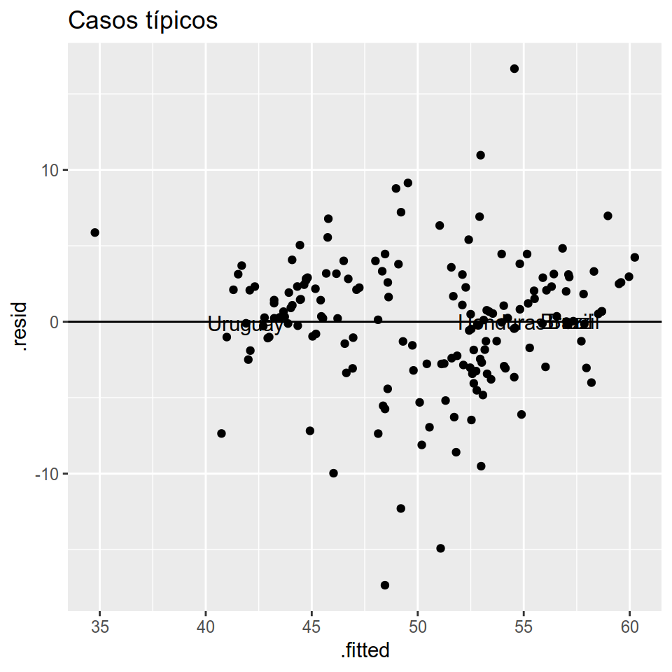
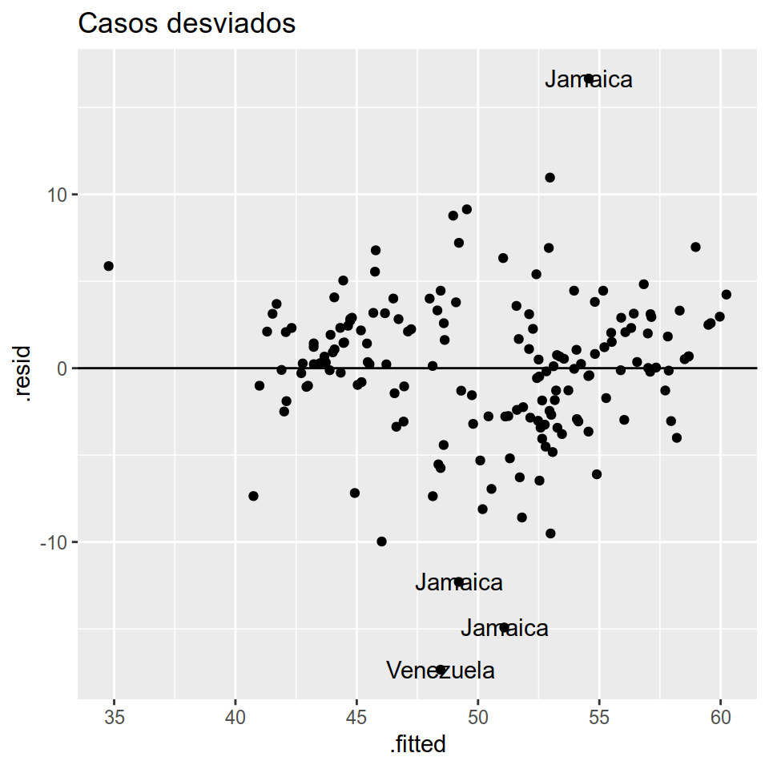
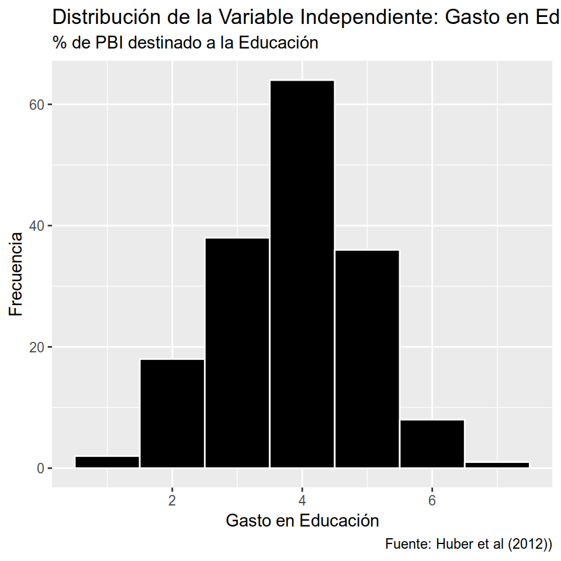

Capítulo 11 Selección de casos a partir de regresiones
Por Inés Fynn y Lihuen Nocetto
Lecturas de referencia
Seawright, J., & Gerring, J. (2008). Case selection techniques in case study research: A menu of qualitative and quantitative options. Political Research Quarterly, 61(2), 294-308.
Gerring, J. (2008). Case selection for case‐study analysis: qualitative and quantitative techniques. In The Oxford handbook of political methodology. Oxford University Press.
Lieberman, E. S. (2005). Nested analysis as a mixed-method strategy for comparative research. American Political Science Review, 99(3), 435-452.
Seawright, J. (2016). Multi-method social science: Combining qualitative and quantitative tools. Cambridge University Press.
Este capítulo te dará herramientas para que a partir de lo que vimos en el capítulo de modelos lineales, puedas usar las regresiones para seleccionar casos de estudio mediante un diseño de métodos mixtos. Cuando estamos trabajando con datos observacionales (y no experimentales), las regresiones MCO no pueden, por sí mismas, responder preguntas de inferencia causal. Es decir, si bien nos permiten dilucidar si es que existe algún tipo de relación entre nuestra variable independiente y dependiente, la investigación quedará incompleta si no logramos evidenciar, con otro tipo de métodos, cómo es que se conectan causalmente estas variables. Un libro excelente para consultar y aprender más sobre este tema es Multi-method social science: Combining qualitative and quantitative tools de Jason Seawright.
La selección de métodos para hacer una investigación está guiada por la pregunta que queremos responder. Por ejemplo, si el interés está en entender cuáles son los determinantes de desigualdad en los países de América Latina y el Caribe, vamos a emplear un análisis estadístico de n-grande que nos permita analizar la mayor cantidad de países posible. De este modo, hemos encontrado en las secciones anteriores que, en promedio, el gasto en educación tiene un efecto positivo sobre los niveles de desigualdad. Sin embargo, el hallazgo de que mayor gasto en educación genere mayores niveles de desigualdad resulta un tanto inquietante y contraintuitivo. Además, un hallazgo como este podría tener implicancias importantes para la elaboración de políticas públicas y consecuencias para la vida real de las personas.
Por tanto, para avanzar en nuestra investigación sería aconsejable intentar responder, por ejemplo, ¿Por qué la educación afecta positivamente los niveles de desigualdad? Es decir, cuál es el mecanismo causal que explica que en los países de América Latina y el Caribe mayor gasto en educación genere mayores niveles de desigualdad. Para responder preguntas de este tipo muchas veces recurrimos a los métodos cualitativos (como por ejemplo, el estudio de casos en profundidad y análisis de process tracing) que nos permitan comprender cuáles son los procesos que explican por qué y cómo se da una relación causal. De este modo, lo que pretendemos hacer es integrar (Seawright, 2016) dos métodos de investigación, donde un método plantea la pregunta de investigación (el análisis estadístico), mientras que otro la pretende responder (estudio de caso). Otra alternativa para fortalecer nuestra investigación podría ser la triangulación: abordar la misma pregunta de investigación pero a partir de distintos métodos que, en su conjunto, nos permitirán una explicación más compleja y completa del fenómeno que pretendemos explicar.
Más allá del camino que se tome (integración o triangulación), el objetivo es combinar métodos distintos para ofrecer una explicación más compleja al fenómeno que nos interesa estudiar. A la combinación de métodos la conocemos como “métodos mixtos” donde justamente el objetivo es abordar un mismo fenómeno a partir de distinas metodologías que permitan capturar distintos ángulos o dimensiones. Si bien existen infinitas formas de combinar métodos, algunos métodos son más compatibles entre sí que otros y, de hecho, algunas combianciones pueden llevarnos a mayor confusión que claridad (Lieberman, 2005).
En esta sección veremos una combinación de métodos que Lieberman (2005) ha denominado nested analysis y no es otra cosa que la combinación de análisis estadístico de una muestra grande con el estudio en profundidad de uno o más casos contenido en dicha muestra. En definitiva, lo que haremos será seleccionar casos (en este caso países) a partir de la estimación de nuestro modelo. Luego de haber estimado el modelo, el primer paso para seleccionar casos de estudio es calcular los residuos y los valores predichos por el modelo para cada una de nuestras observaciones. Esto porque, para seleccionar nuestros casos de estudio, vamos a estar comparando lo que nuestro modelo predijo contra los valores reales (de la muestra) de cada uno de esos casos: la diferencia entre estos dos valores (los predichos y los reales) son los residuos.
Para extraer del modelo los residuos y los valores predichos utilizamos el comando augment del paquete broom. Lo que hace este comando es crear una nueva base de datos que le agrega variables sobre el modelo a la base original (para cada caso): valores predichos, errores estándar, el residuo y el residuo estandarizado, entre otros estadísticos. Usaremos para el ejemplo el modelo 2 que estimamos en el Capítulo 6 con los datos de Huber et al (2006).
Residuos y valores predichos:
library(tidyverse)
## ── Attaching packages ──── tidyverse 1.2.1 ──
## ✔ ggplot2 3.1.0 ✔ purrr 0.3.1
## ✔ tibble 2.0.1 ✔ dplyr 0.8.0.1
## ✔ tidyr 0.8.3 ✔ stringr 1.4.0
## ✔ readr 1.3.1 ✔ forcats 0.4.0
## ── Conflicts ─────── tidyverse_conflicts() ──
## ✖ dplyr::filter() masks stats::filter()
## ✖ dplyr::lag() masks stats::lag()
library(paqueteadp)
data("bienestar_la")bienestar_la_sinna <- bienestar_la %>%
drop_na(gini_slc, cseduc, fdiingdp, cshlth, csssw, pop014wdi, s_dualism,
ethnicdicot, rgdpch, demrss, legbal, repressauthor)
modelo_2 <- lm(gini_slc ~ 1 + cseduc + fdiingdp + cshlth + csssw + pop014wdi +
s_dualism + ethnicdicot + rgdpch + demrss + legbal +
repressauthor,
data = bienestar_la_sinna)
modelo_aug <- broom::augment(modelo_2, data = bienestar_la_sinna)
modelo_aug
## # A tibble: 167 x 21
## country id year pop014wdi gini_slc s_dualism rgdpch fdiingdp
## <chr> <chr> <dbl> <dbl> <dbl> <dbl> <dbl> <dbl>
## 1 Argent… ARG 1982 30.8 40.2 9.50 7711. 0.269
## 2 Argent… ARG 1983 30.9 40.4 8.36 7907. 0.178
## 3 Argent… ARG 1990 30.7 43.1 7.72 6823. 1.30
## 4 Argent… ARG 1991 30.4 44 6.42 7392. 1.29
## 5 Argent… ARG 1992 30.1 43 5.59 7986. 1.94
## 6 Argent… ARG 1993 29.8 42 4.99 8411. 1.18
## 7 Argent… ARG 1994 29.4 43 5.01 8764. 1.41
## 8 Argent… ARG 1995 29.1 46 5.19 8578. 2.17
## 9 Argent… ARG 1996 28.9 46 5.28 8905. 2.55
## 10 Argent… ARG 1997 28.6 46 4.87 9425. 3.13
## # … with 157 more rows, and 13 more variables: ethnicdicot <dbl>,
## # demrss <dbl>, cseduc <dbl>, cshlth <dbl>, csssw <dbl>, legbal <dbl>,
## # repressauthor <dbl>, .fitted <dbl>, .resid <dbl>, .std.resid <dbl>,
## # .hat <dbl>, .sigma <dbl>, .cooksd <dbl>11.1 ¿Qué casos de estudio debo seleccionar para testear mi hipótesis?
Los casos seleccionados para un estudio en profundidad se eligen de una población, y las razones de esta selección dependen de la forma en que están situados dentro de esa población. En este sentido, de acuerdo a Gerring (2006), un estudio de caso no puede existir aislado del análisis de un n relativamente grande de casos cruzados. El mejor caso de estudio dependerá de cuál es el objetivo para el cual se está seleccionando el caso. De este modo, la selección de casos debe ser intencional y no aleatoria (Gerring, 2006). A continuación se detallan distintos objetivos para los que se seleccionan casos y su implementación en R a partir del modelo estadístico sobre los determinantes de la desigualdad en América Latina y el Caribe.
11.1.1 Casos Típicos
Uno de los objetivos de la selección de casos radica en ilustrar la relación encontrada y profundizar sobre los mecanismos que vinculan la variable independiente con la dependiente. Si este es nuestro objetivo, entonces querremos seleccionar casos que sean ejemplos típicos de la relación que encontramos con el análisis estadístico. Por tanto, lo que buscamos es encontrar aquellos casos con residual más pequeño. Es decir, los casos que nuestro modelo predijo mejor: on the line cases (casos que están sobre la línea de regresión).
Para esto, graficaremos a partir de la base de datos creada con el comando augment los valores predichos sobre los residuos (los cuales transformaremos a valor absoluto porque, por construcción, siempre hay residuos negativos). Además, para identificar los casos, le pediremos al ggplotque agregue las etiquetas de los dos (top_n(-2, .resid_abs)) países (mapping=aes(label=country)) con menores residuos. La línea horizontal (geom_hline(aes(yintercept = 0))) la incorporamos al gráfico para visualizar donde el residuo es nulo (allí se encontrarán los casos que el modelo predijo perfectamente: los más típicos).
ggplot2::qplot(data = modelo_aug, x = .fitted, y = .resid, geom = "point",
main = "Casos típicos") +
geom_hline(aes(yintercept = 0)) +
geom_text(data = . %>%
mutate(.resid_abs = abs(.resid)) %>%
top_n(-4, .resid_abs),
mapping = aes(label = country))
De acuerdo a lo graficado, Brasil, Honduras y Uruguay son dos casos típicos del modelo estimado sobre los determinantes de la desigualdad en América Latina y el Caribe. Es decir, son casos que a partir de las variables del Modelo 2 podríamos explicar muy bien sus niveles de desigualdad, sean estos altos (Brasil, Honduras) o bajos (Uruguay).
11.1.2 Casos desviados
Los casos desviados son aquellos que, dado nuestro modelo, presentan un comportamiento no esperado; son desviados pues no pueden ser bien explicados por el modelo general. En definitiva son “anomalías teóricas” (Gerring, 2006: 106). Por lo general seleccionamos este tipo de casos para explorar nuevas hipótesis y que, eventualmente pueden arrojar luz sobre variables omitidas del modelo estadístico. La selección de casos desviados funciona de manera opuesta a la selección de casos típicos: en lugar de seleccionar aquellos con menor residual, se seleccionan los casos cuyo valor predicho difiere más del valor real (mayor residual).
ggplot2::qplot(data = modelo_aug, x = .fitted, y = .resid, geom = "point",
main = "Casos desviados") +
geom_hline(aes(yintercept = 0)) +
geom_text(data = . %>%
mutate(.resid_abs = abs(.resid)) %>%
top_n(4, .resid_abs),
mapping = aes(label = country)) Jamaica (varios años) aparece como un país muy mal explicado por nuestro modelo. Es un país que presenta valores relativamente bajos de desigualdad, y las variables del modelo no dan cuenta de estos valores. Hay un año particularmente interesante, que es el de 1993, en el que el score de gini es de 35.7, un valor que la ubica entre las más equitativas de la muestra. En un barrio de países de los más desiguales del mundo estaríamos necesitando incororar alguna variable a nuestro modelo para lograr explicar el caso jamaiquino.
11.1.3 Casos Influyentes
Los casos influyentes son aquellos casos que muestran valores extremos pero que tienen mucho peso sobre la relación encontrada por el modelo. Es decir, son casos que influyen en la pendiente de regresión que observamos (recuerda que la pendiente está dada por el coeficiente de regresión \(\beta_i\)). Se trata de casos que, al igual que los casos desviados, también son inusuales aunque de un modo distinto. Cuando selecciono un caso influyente es para confirmar el modelo, mientras que la selección de casos desviados se utiliza para explorar hipótesis alternativas (Gerring, 2006). Para identificar los casos infulyentes podemos tomar dos caminos:
- Por un lado, se pueden utilizar los dfbetas que son estadísticos que indican cuánto el coeficiente de regresión \(\beta_i\) cambia en unidades de desviación estándar si la i-ésima observación fuera eliminada. Por tanto, tendremos un dfbeta para cada observación que indica cuánto cambiaría el \(\beta_i\) de la variable cseduc (gasto en educación), si ese caso no estuviera presente. Por tanto, cuánto más varíe la pendiente (\(\beta_i\)) con la ausencia del caso, más influyente será dicho caso.
De este modo, lo que queremos es seleccionar los casos que generan mayores cambios en desviación estándar del \(\beta_i\) si fuesen eliminados. Así, los casos influyentes pueden ser utilizados para confirmar la teoría, aunque si su eliminación anula la relación encontrada (si al quitar el caso \(\beta_i\) deja de ser significativo), es también útil para explorar nuevas hipótesis o identificar variables que hayan sido omitidas en el modelo.
modelo_aug %>%
mutate(dfb_cseduc = as.tibble(dfbetas(modelo_2))$cseduc) %>%
arrange(-dfb_cseduc) %>%
slice(1:3) %>%
dplyr::select(country, dfb_cseduc)
## Warning: `as.tibble()` is deprecated, use `as_tibble()` (but mind the new semantics).
## This warning is displayed once per session.
## # A tibble: 3 x 2
## country dfb_cseduc
## <chr> <dbl>
## 1 Barbados 0.483
## 2 Jamaica 0.298
## 3 Venezuela 0.241- Utilizando la distancia de Cook que se basa en una lógica muy similar a los dfbetas. La distancia de Cook considera los valores que asume cada observación en la variable independiente y dependiente para calcular cuánto varían los coeficientes cuando en ausencia de cada caso. En definitiva, esta distancia lo que nos indica es qué tanto influye cada caso en la regresión en su conjunto: a mayor distancia de Cook, mayor es la contribuión del caso a las inferencias del modelo. Es decir, los casos con gran distancia de Cook son centrales para mantener las conclusiones analíticas (esto sobre todo con muestras relativamente pequeñas, con muestras muy grandes es menos probable que existan casos con tal poder de influencia). Es por esto que seleccionar estos casos para un estudio en profundidad puede ser relevante: si en el estudio cualitativo de un caso influyente no podemos confirmar nuestra teoría, es poco probable que lo podamos confirmar en otros casos.
ggplot2::qplot(data = modelo_aug, x = .fitted, y = .cooksd, geom = "point",
main = "Casos influyentes") +
geom_text(data = . %>%
top_n(3, .cooksd),
mapping = aes(label = country)) Nuevamente Jamaica se destaca como un país que debemos observar.
Nuevamente Jamaica se destaca como un país que debemos observar.
11.1.4 Casos extremos
La selección de casos extremos supone identificar observaciones que se ubiquen lejos de la media de la distribución de la variable independiente o dependiente (que tenga valores extremos). El interés está en la “rareza” del valor que asume ese caso en la variable. Es importante destacar que un caso extremos puede coincidir tanto con un caso típico como con uno desviado (Gerring, 2006). El estudio en profundidad de casos extremos es más bien exploratorio: es una forma de evaluar y buscar causas posibles de \(y\) o efectos posibles de \(x\). Esta técnica se recomienda para cuando no hay demasiada teoría elaborada y, por tanto, la investigación está concentrada en la construcción teórica.
Un trabajo clásico de selección de casos extremos en la variable dependiente es el de Theda Skocpol (1979) sobre revoluciones sociales, donde la teoría se desarrolla en base a tres casos que presentan el valor más extremo de revolución (de hecho son los únicos casos que presentan dicho valor de acuerdo a Skocpol).
11.1.4.1 Casos extremos en la variable independiente: \(x\)
Veamos como se comporta nuestra variable independiente:
ggplot(bienestar_la_sinna, aes(x = cseduc)) +
geom_histogram(binwidth = 1,color="white", fill="black") +
labs(title = paste(
"Distribución de la Variable Independiente: Gasto en Educación"),subtitle = paste("% de PBI destinado a la Educación"),
caption = paste ("Fuente: Huber et al (2012))"
),
x = "Gasto en Educación",
y = "Frecuencia"
) Para seleccionar casos extremos en la variable independiente, a partir del modelo estadístico estimado, simplemente calculamos las diferencias - en valor absoluto - entre el valor de cada caso y la media muestral del gasto en educación. Luego, se seleccionan los tres casos que muestran mayor diferencia entre la media muestral y su valor de la variable independiente. Primero, calculamos la media para tener la referencia.
mean(modelo_aug$cseduc, na.rm = T)
## [1] 4
modelo_aug %>%
mutate(dif_cseduc = abs(cseduc - mean(cseduc, na.rm = T))) %>%
top_n(3, dif_cseduc) %>%
arrange(-dif_cseduc) %>%
dplyr::select(country, year, cseduc, dif_cseduc)
## # A tibble: 3 x 4
## country year cseduc dif_cseduc
## <chr> <dbl> <dbl> <dbl>
## 1 Barbados 1981 0.8 3.16
## 2 Honduras 2001 6.8 2.84
## 3 Uruguay 1984 1.4 2.56Graficamos los resultados para una mejor visualización:
modelo_aug$dif_cseduc = abs(modelo_aug$cseduc - mean(modelo_aug$cseduc, na.rm = T))
ggplot2::qplot(data = modelo_aug, x = .fitted, y = dif_cseduc, geom = "point",
main = "Casos extremos en Gasto en Educación") +
geom_text(data = . %>%
top_n(3, dif_cseduc),
mapping = aes(label = country)) Barbados se destaca por ser extremo pues está muy por debajo de la media amostral. Honduras, por el contrario, esta muy por encima. Sería interesante comparar ambos. Al ver que el tercer país es Uruguay, que tiene valores bajos comparados a la media, surge una duda que seguramente nos hará mejorar el modelo: ¿acaso no deberíamos controlar por el tamaño de la economía, medido por su PBI? Esta duda podría llevaros a un nuevo modelo, donde las significancias estadísticas podrían cambiar.
Barbados se destaca por ser extremo pues está muy por debajo de la media amostral. Honduras, por el contrario, esta muy por encima. Sería interesante comparar ambos. Al ver que el tercer país es Uruguay, que tiene valores bajos comparados a la media, surge una duda que seguramente nos hará mejorar el modelo: ¿acaso no deberíamos controlar por el tamaño de la economía, medido por su PBI? Esta duda podría llevaros a un nuevo modelo, donde las significancias estadísticas podrían cambiar.
11.1.4.2 Casos extremos en la variable dependiente: \(y\)
La selección de casos extremos en la variable dependiente se realiza del mismo modo que con los casos extremos en \(x\). Solo que ahora calculamos las diferencias - en valor absoluto - entre el valor de cada caso en la variable dependiente y la media muestral (Índice de Gini en el ejemplo). Luego, se seleccionan los tres casos que muestran mayor diferencia entre la media muestral y su valor de la variable dependiente. Primero, calculamos la media para tener la referencia.
mean(modelo_aug$gini_slc, na.rm = T)
## [1] 50
modelo_aug %>%
mutate(dif_gini = abs(gini_slc - mean(gini_slc, na.rm = T))) %>%
top_n(2, dif_gini) %>%
arrange(-dif_gini) %>%
dplyr::select(country, gini_slc, dif_gini)
## # A tibble: 2 x 3
## country gini_slc dif_gini
## <chr> <dbl> <dbl>
## 1 Barbados 28.9 21.4
## 2 Jamaica 66 15.7Podemos también graficarlo para una mejor visualización:
modelo_aug$dif_gini = abs(modelo_aug$gini_slc - mean(modelo_aug$gini_slc, na.rm = T))
ggplot2::qplot(data = modelo_aug, x = .fitted, y = dif_gini, geom = "point",
main = "Casos extremos en Índice de Gini") +
geom_text(data = . %>%
top_n(2, dif_gini),
mapping = aes(label = country)) Nuevamente Barbados y Jamaica aparecen como casos atípicos en la variable dependiente. Ambas tienen en común que fueron colonias caribeñas del Imperio Británico, quizás podríamos incluir ese control para todos los países con este legado y ver como se ajusta el nuevo modelo. De haber grandes cambios en los valores predichos, podríamos explorar mediante evidencia cualitativa el rol que tuvieron las instituciones coloniales del Imperio Británico sobre la desigualdad de estas colonias.
Nuevamente Barbados y Jamaica aparecen como casos atípicos en la variable dependiente. Ambas tienen en común que fueron colonias caribeñas del Imperio Británico, quizás podríamos incluir ese control para todos los países con este legado y ver como se ajusta el nuevo modelo. De haber grandes cambios en los valores predichos, podríamos explorar mediante evidencia cualitativa el rol que tuvieron las instituciones coloniales del Imperio Británico sobre la desigualdad de estas colonias.
11.1.5 Casos más similares
La selección de casos similares supone identificar dos casos que son similares en todas las variables salvo en las variables de interés. Cuando estamos en una etapa exploratoria de nuestra investigación y no tenemos una teoría (no tenemos identificada una variable independiente en particular), se buscan un par de casos que sean iguales en sus variables independientes pero que difieran en la variable de resultado (dependiente). De este modo, el objetivo será identificar uno o más factores que difieran entre los casos y que puedan explicar la divergencia en el resultado. Esta estrategia es la del método de semejanza (o concordancia) de Stuart Mill.
Sin embargo, cuando ya tenemos una teoría sobre cómo se vincula una determinada variable independiente con la variable dependiente, la seleción de casos similares se enfoca en identificar dos casos que sean similares en todos los controles pero diferentes en la variable independiente de interés. Aquí, el interés estará en confirmar el argumento y profundizar en los mecanismos causales que conectan la variable independiente con la dependiente.
Para seleccionar casos similares, se recomienda utilizar alguna técnica de matching (Gerring, 2006: 134). En simples palabras, esta técnica supone justamente juntar pares (en su versión más básica) de observaciones que sean lo más similares posible en todas las variables de control pero que difieran en la variable independiente de interés. Para simplificar el análisis, la variable independiente suele ser dicotómica (0 y 1) emulando una situación experimental donde hay una tratamiento (1) y un placebo o control (0). De este modo, el objetivo es “matchear” (la menor distancia posible entre los valores de las variables de control) pares donde una observación pertenece al grupo del tratamiento y la otra al grupo de control.
Cómo encontrar pares que coincidan en todas las variables de control es, por lo general, bastante exigente, se suele utilizar un procedimiento denominado como matching en base al puntaje de propensión (propensity score). Este procedimiento supone encontrar pares de observaciones que tengan probabilidades estimadas similares de estar en el grupo de tratamiento (tener valor 1 en la variable independiente de interés), condicionadas en las variables de control.
Para implementar esta selección de casos en nuestra investigación vamos a crear una variable dummy de tratamiento (para la variable de gasto en educación), donde 0 es gasto menor a la media muestral de gasto y 1 gasto mayor a la media.
media <- mean(bienestar_la_sinna$cseduc)
bienestar_la_sinna$tratamiento <- ifelse(bienestar_la_sinna$cseduc > media, 1, 0)Ahora que tenemos la variable de tratamiento, podemos calcular los puntajes de propensión. Es decir, la probabilidad de estar en el grupo de tratamiento (gasto en educación mayor a la media muestral), condicionado en las variables de control del modelo. Este cálculo se hace a partir de un modelo logit (ver Capítulo ##), ya que nuestra variable dependiente es una variable dicotómica.
propensityscore <- glm(tratamiento ~ s_dualism + fdiingdp + rgdpch + pop014wdi +
ethnicdicot + demrss + demrss * csssw + cshlth + csssw +
legbal + repressauthor,
data = bienestar_la_sinna,
family = binomial(link = logit),
na.action = na.exclude)Al igual que como hicimos con el modelo general de los determinantes de la desigualdad, crearemos una base de datos con el comando augment para guardar algunos estadísticos que nos serán útiles para seleccionar los casos.
propensity_scores<- broom::augment(propensityscore, data = bienestar_la_sinna,
type.predict = "response") %>%
dplyr::select(propensity_scores = .fitted, country, tratamiento, year, gini_slc)Ahora, identificaremos los casos con menores puntajes de propensión tanto para el grupo de tratamiento (alto gasto en educación) como para el grupo de control (bajo gasto en educación), para decidir la selección de casos. Cabe destacar que esto también puede hacerse para altos puntajes de propensión, o para cualquier puntaje de propensión, lo importante es que tengan puntajes similares o “cercanos” (igual probabilidad de recibir el tratamiento).
Casos con bajo puntaje de propensión, en el grupo de países con gasto en educación mayor a la media muestral:
propensity_scores %>%
filter(tratamiento == 1) %>%
arrange(propensity_scores) %>%
dplyr::select(country, year, propensity_scores) %>%
slice(1:2)
## # A tibble: 2 x 3
## country year propensity_scores
## <chr> <dbl> <dbl>
## 1 Brazil 1984 0.0815
## 2 Mexico 2000 0.159Por otra parte, veamos cuáles son los casos con bajo puntaje de propensión pero entre aquellos países con gasto en educación menor a la media muestral:
propensity_scores %>%
filter(tratamiento == 0) %>%
arrange(propensity_scores) %>%
dplyr::select(country, year, propensity_scores) %>%
slice(1:2)
## # A tibble: 2 x 3
## country year propensity_scores
## <chr> <dbl> <dbl>
## 1 Paraguay 1994 0.00309
## 2 Argentina 1982 0.00673De acuerdo a los resultados obtenidos, tanto Brasil como México podrían ser seleccionados para ser comparados con Paraguay o Argentina para realizar estudios de casos más similares en profundidad. Por proximidad geográfica, podríamos elegir Brazil y Argentina, e intentar así dilucidad de qué manera el gasto sobre educación ha repercutido sobre la equidad de renta en ambos países.
11.1.6 Casos más diferentes
El procedimiento de selección de casos más diferentes supone una lógica opuesta a la de casos más similares. Aquí se buscan casos que sean en realidad distintos en las variables de control, pero que sean similares en el valor asumido por la variable independiente de interés y la variable dependiente. En definitiva, lo que buscamos son distintos puntajes de propensión pero coincidencia en la variable independiente y dependiente.
Cabe destacar que este tipo de selección de casos es útil cuando se asume “causalidad única” (Gerring, 2006: 143). Es decir, cuando la variable dependiente es causada por una única variable (o cuando nos interesa explicar el efecto de un sólo factor). Si el interés es indagar sobre la combinación de distintos factores causales, este procedimiento de selección de casos no resulta el más indicado. Para seleccionar casos “más diferentes” también utilizaremos los puntajes de propensión, pero ahora nos interesa seleccionar en base a iguales resultados en la variable dependiente, así como en la variable independiente y con puntajes de propensión muy distintos.
Veamos, entonces, cuáles son los casos donde hay coincidencia en la variable independiente de interés y en la de resultado pero con diferente puntaje de propensión.Primero creamos una variable dummy para el gini mayor y menor a la media. Luego, identificamos los casos tratados con menor puntaje de propensión (baja probabilidad de tener gasto mayor a la media) para valores de gini mayores a la media muestral y valores de gasto en educación también mayor a la media muestral:
propensity_scores$gini <- ifelse(propensity_scores$gini_slc > (mean(propensity_scores$gini_slc, na.rm = TRUE)), 1, 0)
propensity_scores %>%
filter(gini == 1 & tratamiento==0) %>%
arrange(propensity_scores) %>%
dplyr::select(country, year, propensity_scores) %>%
slice(1:2)
## # A tibble: 2 x 3
## country year propensity_scores
## <chr> <dbl> <dbl>
## 1 Paraguay 1999 0.00953
## 2 Paraguay 1997 0.0221A continuación, hacemos lo mismo pero para los puntajes de propensión más altos (es decir, donde la probabilidad de recibir el tratamiento - tener gasto en educación mayor a la media - es muy elevada). Es decir, identificamos los casos con mayor puntaje de propensión para valores de gini mayores a la media muestral y gasto en educación mayor a la media muestral:
propensity_scores %>%
filter(gini == 1 & tratamiento==0) %>%
arrange(-propensity_scores) %>%
dplyr::select(country, year, propensity_scores) %>%
slice(1:2)
## # A tibble: 2 x 3
## country year propensity_scores
## <chr> <dbl> <dbl>
## 1 Honduras 1994 0.983
## 2 Honduras 1996 0.969Nuestros resultados indican que, Paraguay podría ser seleccionados para ser comparado con Honduras para realizar estudios de casos “más diferentes” en profundidad. Ambos tienen bajos niveles de gasto en educación como porcentaje del PBI, y ambos son altamente desiguales.
11.2 La relevancia de combinar métodos
Para finalizar, consideramos importante insistir sobre la relevancia de combinar métodos al momento de responder una pregunta de investigación. Si bien cuáles serán los métodos apropiados dependerán de cuál es la pregunta, una respuesta a un fenómeno requiere tanto de la identificación de una relación entre dos (o más) variables, y una explicación que detalle cómo estas dos variables se vinculan y por qué se genera el efecto identificado. Para abordar estas dos dimensiones resulta necesario combinar distintas estrategias empíricas, para explotar las respectivas virtudes y complementar sus debilidades.
En el caso concreto que nos ocupa, la estimación por MCO permite identificar relaciones promedio entre dos variables en un gran número de casos y para varios años, algo que la investigación cualitativa no puede realizar. Sin embargo, MCO no puede responder sobre el por qué o el cómo de estas relaciones y, para eso, es necesaria una investigación cualitativa que profundice en los procesos y actores que “producen” estas relaciones. Claro que el proceso también puede ser el inverso: identificar primero una relación entre dos variables a partir de estudios en profundidad de casos y, luego, testear la relación encontrada en otros casos en un estudio cuantitativo de n-grande para evaluar la generalización del hallazgo. En todo caso, la combinación de métodos - ya sea por triangulación o por integración (Seawright, 2016) -, es aconsejable para ofrecer explicaciones más complejas y acabadas de los fenómenos que nos interesa estudiar.